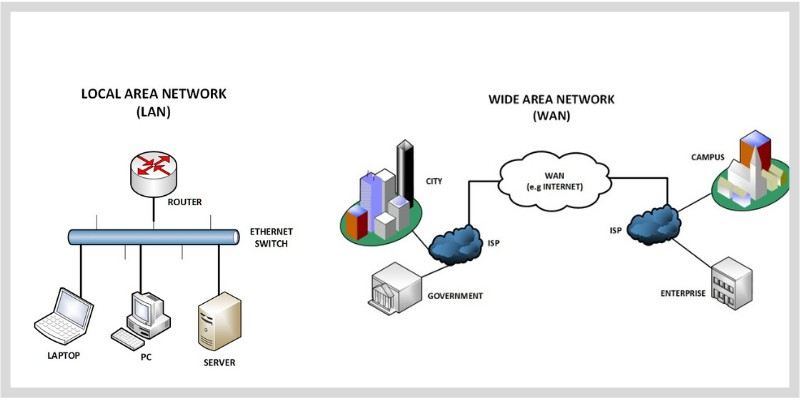

LAN & WAN
Networks connect devices to share resources and communicate. The two most fundamental network types are Local Area Networks (LAN) and Wide Area Networks (WAN).
Learning Objectives
- 11.6.1.1 Compare LAN and WAN
Conceptual Anchor
The Office vs City Analogy
A LAN is like the internal phone system in one office building — fast, private, and owned by the company. A WAN is like the telephone network connecting offices in different cities — slower, uses public infrastructure, and covers a much larger area.

How it works: LAN to WAN
Rules & Theory
LAN vs WAN Comparison
| Feature | LAN | WAN |
|---|---|---|
| Full name | Local Area Network | Wide Area Network |
| Geographic scope | Single building or campus | Cities, countries, continents |
| Speed | High (100 Mbps – 10 Gbps) | Lower (varies, typically 1–100 Mbps) |
| Ownership | Private (owned by organization) | Often uses public/leased infrastructure |
| Cost | Lower setup and maintenance | Higher (leased lines, infrastructure) |
| Error rate | Low (short distances) | Higher (long distances, more interference) |
| Security | Easier to secure | More vulnerable (public links) |
| Example | School computer lab | The Internet |
| Transmission Medium | Twisted pair (Ethernet), Wi-Fi | Fiber optic cables, Satellites, Microwave links |
Other Network Types

| Type | Scope | Example |
|---|---|---|
| PAN (Personal) | Within a person's reach (~10 m) | Bluetooth headphones |
| MAN (Metropolitan) | City-wide | City-wide Wi-Fi, cable TV network |
| WLAN (Wireless LAN) | LAN using Wi-Fi | Home Wi-Fi network |
| Error rate & Interference | Low (short distances, less attenuation) | Higher (long distances, signal attenuation requires repeaters) |
Advantages of Networking
| Advantage | Description |
|---|---|
| Resource sharing | Printers, files, internet connection shared among users |
| Communication | Email, instant messaging, video conferencing |
| Centralized management | Software updates, security from one server |
| Collaboration | Multiple users work on shared documents |
The Internet Is a WAN
The internet is the world's largest WAN — a global network of interconnected networks. It uses public infrastructure (fiber optic cables, satellites, undersea cables) and standard protocols (TCP/IP) to connect billions of devices worldwide.
Common Pitfalls
LAN = Wired, WAN = Wireless
This is wrong! Both LANs and WANs can use wired or wireless connections. The difference is geographic scope, not the connection type.
Tasks
Define LAN and WAN. State three differences between them.
Explain why a LAN is typically faster than a WAN.
A company has offices in Astana and Almaty. What type of network connects them? What connects computers within each office?
Compare the security challenges of a LAN vs a WAN. Which requires more security measures? Why?
Self-Check Quiz
Q1: What does LAN stand for?
Q2: Which network type covers a larger geographic area?
Q3: Is the Internet a LAN or a WAN?